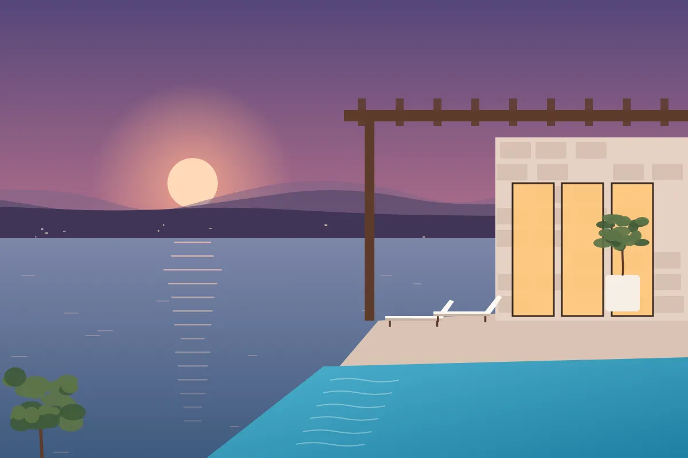
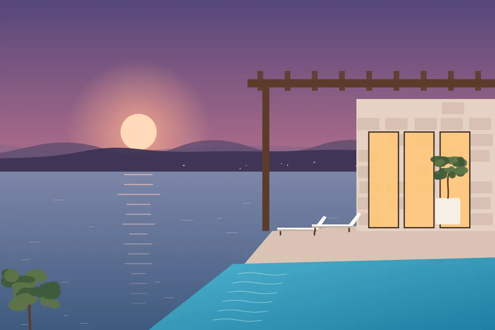
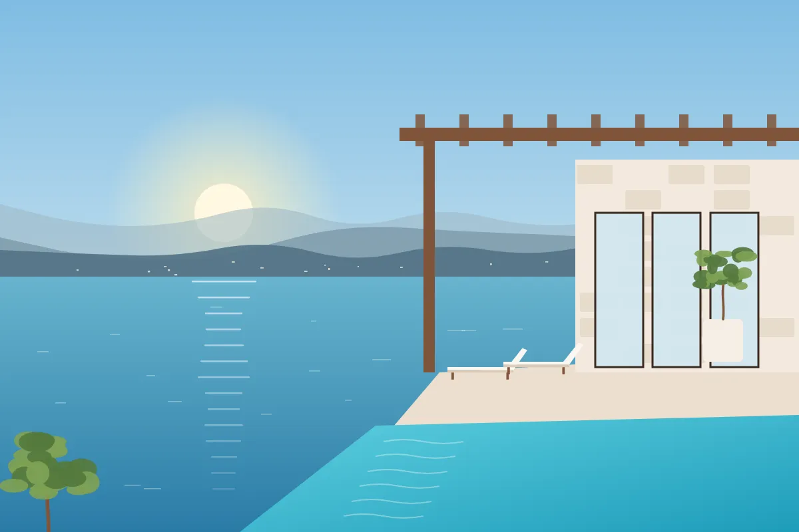

Kalkan Kalamar
'den başlayan₺14.500 / gece
Villa Beyaz Kemer
- 10 kişi
- 5 yatak odası
- 5 banyo
- Kaputaş Plajı: 15 dk araçla
- Kalkan Marina: 12 dk yürüme
Kalamar koyuna bakan, havuzu dışarıdan görünmeyen üç katlı taş ev.
Taş ve ahşabın birlikte kullanıldığı üç katlı bir villa. Havuz çevresi yüksek duvar ve zeytin ağaçlarıyla çevrili; komşulardan ya da yoldan görünmüyor.
Alt katta çocuklar için oyun alanı, üst katta deniz manzaralı ebeveyn odası var. Kalamar plajına araçla birkaç dakika, Kalkan merkeze on dakika.
Villa Kalamar Taşevi, Kalamar Mahallesi'nde. Haritadaki turuncu ev işareti villanın tam yeri. Bir yere tıklayın; villadan oraya olan yol haritada gösterilsin.
Dalaman Havalimanı: 120 km, yaklaşık 1 sa 40 dk Antalya Havalimanı: 215 km, yaklaşık 3 sa 15 dk
Süreler koordinatlara göre yaklaşık hesaplanmıştır; trafik ve yol durumuna göre değişebilir.
Giriş ve çıkış gününe tıklayarak seçin. En az 5 gece.
Turizm amaçlı konut izin belge no: 07-XXXX



%16 indirim